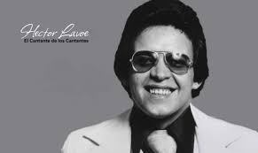

Sonidos del Corazón

| Representantes del Genero | |||||
|---|---|---|---|---|---|
| Cantante | Biografia | Postal | Discografia | Videos | Video en Linea |
| Hector Lavoe | Si hay una persona que puede englobar la palabra salsa es Héctor Lavoe. El gran referente de este género nació un 30 de septiembre de 1946 en Puerto Rico y desde ese momento estaba destinado a ser un grande. A pesar de que su vida terminó un 29 de junio, pero de 1993 en Nueva York, el artista enfrentó muchas situaciones que, de alguna u otra manera, para bien o para mal, se vieron reflejadas en sus canciones. |  | Entre sus Obras Maestras Sobresalen:
|
Periodico de Ayer | |